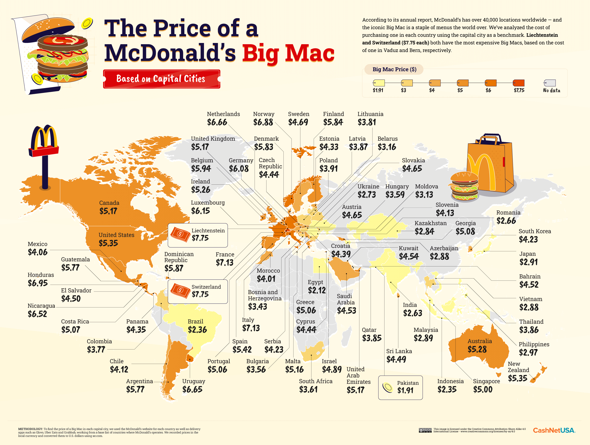

Have you ever complained about the price of an avocado, or a pair of shoes, a video game, or even how much rent you’re paying among friends or family living in different areas? Ever wonder why these products have such drastic variations in prices depending on where you are around the globe? Enter—the Big Mac Index. It was started back in the 1980s by The Economist as a fun way to get people to learn about how currencies are valued at different rates around the world. However you feel about McDonalds, it’s nice when economists at least try to make economic theory sound fun to others. Since McDonalds’ has over 35,000 locations in more than 100 countries, it’s worked pretty well in explaining purchasing power parity, aka the bang you get for different bucks.
It’s not just the Big Mac that varies in price globally. The cost of any good or service around the world is valued at different prices. When you buy foods using the yuan, US dollar, yen, sterling, peso, the euro or others, the reason they cost different amounts is based on a complex range of factors. So what does the Big Mac Index tell us about currencies? At first, my mind jumps to comparing the prices of Big Macs between countries based on what a person using that currency can afford. The Big Mac Index reflects that a burger in Norway costs more than in the Malaysia because people in Norway can more easily afford to pay $8 (USD) for a burger. Right?
Not exactly, it’s more complex than this. A person in Norway has an average income of $34,000 (USD) per year while the average citizen of Malaysia makes $11,500 (USD) per year. But the average income in other countries is higher than Norway, you say? Ok—here’s the answer for that. You have to look at GDP per capita (gross domestic product). Economic jargon, I know. But it’s really interesting and important in understanding why you can’t buy a burger for two bucks all over the world. So, back to Norway. Norway’s GDP is nearly $100,000 per person. What does that mean? It means that Norway produces good and services valued at that amount per person each year. It’s basically taking everything that a country is worth and then dividing that worth by the population. Why is it so high? Partly because Norway produces a lot of natural resources. Norway has a lot of natural gas and oil which has a high value on the global market. So that’s all taken into account on the global market and then the value of currency is determined. So Norway as a whole has a lot of value to the rest of the world because of what the country produces, this in turn determines how much Norway’s currency is worth. Or in the case of the Big Mac Index–cheeseburgers.
Quality. Technically, a Big Mac in the US and in say Australia should be the same product. But, the quality of products can differ a lot. I visited Cairns, in the Northeast region of Australia in 2011 and actually did order a Big Mac. It cost $9 (AUD) at the time, which was a lot more than I was used to paying in the US. What really surprised me was that the quality of meat provided a completely different cheeseburger. I could actually tell it was a burger (not always my impression ordering from McDonalds in other places).
The Big Mac Index can tell us where currencies are severely undervalued. According to the 2014 Big Mac Index, the Mcdonalds’ Big Mac costs $0.67 (USD) in Venezuela. Countries with undervalued (or lower value) currencies often have little global power when it comes to economic trade with countries with strong currencies.
On top of this, citizens of these lower value currency countries have few options for purchasing food and goods domestically because these countries need to export goods in order to raise the value of their currency and economy in the global market. This makes buying quality food a challenge in poor countries. And creates a large-scale poverty cycle for developing countries entering the global market. There’s enough food to feed the world, (hopefully not in the form of Big Macs) the problem is access to affordable nutritious food. When you take a look at the Big Mac Index and look at the polar ends of it, you can see where purchasing power for countries needs to even out so that the world can trade in a more equal manner. (Not coincidentally, this is a major focus of the Global Goals, particularly Goal 10 reducing inequalities)
The Big Mac Index is a fun way to keep an eye on currencies that are over or under valued. It can also reveal countries that need more economic investment and better infrastructure. It may seem great to get a burger for less than a dollar and there are some benefits to that, including lower prices encourages foreign investment and this does help build economies, but this only helps for so long. Fun fact: the Big Mac Index uses the McChicken Sandwich to measure the strength of the ruble in India. I would love to see the next Big Mac Index measured by a McVeggie burger for a more sustainable world.